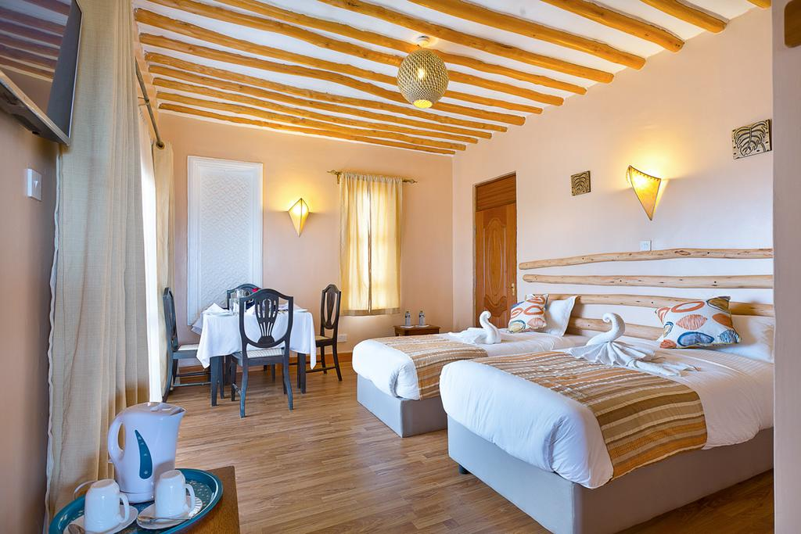
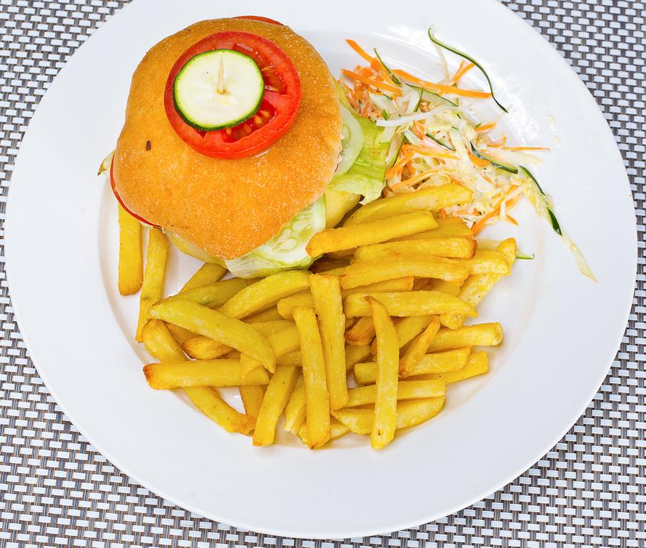
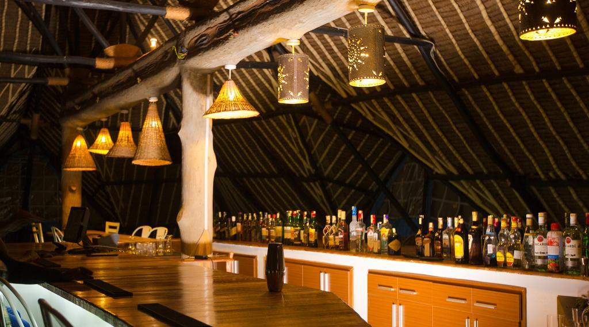
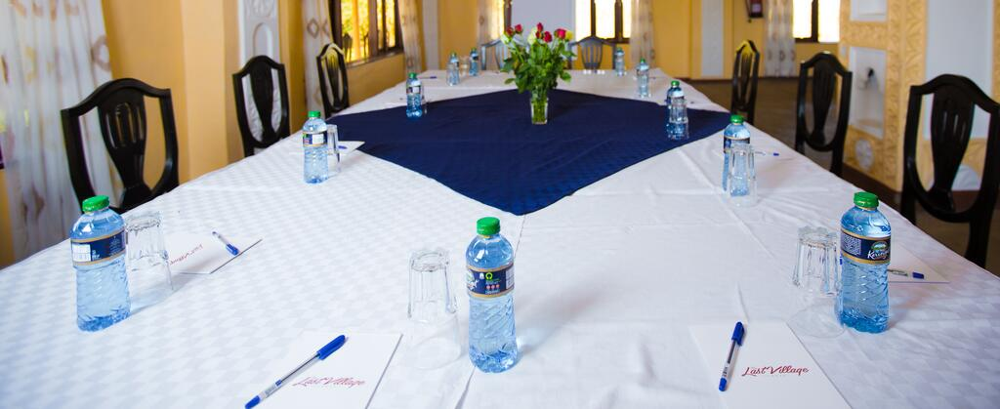
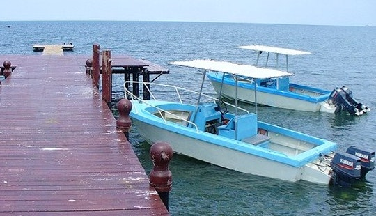

Services
Experience the best of Destiny Resort with attractions, tours, activities and more!

With garden views, Destiny Resort has a restaurant, a 24-hour front desk with very friendly and customer-friendly receptionists, a well-stocked bar, children's playground and terrace. Wifi and private parking also available at the resort, free of charge.
Accomodation
At Destiny Resort, rooms are suites, well-furnished, beautiful, spacious, soundproof and comfortable. The room options are:
- Standard Double and Single Rooms
- Deluxe Double Rooms
- Family Room
With best prices for a night a room, and two or more guests. All rooms offer free Wifi, flat-screen TVs with cable channels and free bottled water. The rooms are also equipped with desks and free toiletries.
Room service is available, on a dial, with a 24-hour availability. We also offer dry-cleaning and housekeeping. Housekeeping is done on a regular basis but can also be done on request.
Deluxe Double RoomWe have a spa area and offer massage on request. Get to try out our well-equipped gym with yoga and acrobatics also provided.
Food and Beverage
Destiny Resort specialises in traditional and international cuisines. We have snacks that are delicious and mouth-watering. You can also order whatever you would like to have for the day and it will be prepared and cooked for you without delay. The food here is farm-to-fork thus making it fresh and available. Some of the local and traditonal foods provided are:
- Fresh fish from Lake Victoria (prepared in customer's preference).
- Githeri and Mukimo (Delicacies from the Central part of Kenya, made on customer's request).
- Traditional vegetables (Osuga, Mrenda, Mito, Sukuma Wiki, and many more).
- Ugali (Corn Staple)
- Kenyan Pilau (Spiced Rice)
- Nyama Choma (Roasted Meat)
- Chapati
- Mutura

Breakfast options include:
- Beverages (Tea, Coffee, Uji, Milk, Cocoa and Juice)
- Snacks (Sausages, Samosa, Bhajia, Mandazi, Omelette,Nduma and Sweet Potatoes, Chips and Burger, and pies). 

We also have a bar area with a pool table and darts where you can drink and have fun with friends while listening to beautiful and cool music that soothes your soul and helps you relax. Drinks range from wine to cocktails.
There is enough Security personell at this area to deal with any disturbance, and round the clock service-persons to attend to you when you need them. Adjacent is VIP rooms for those who would like some privacy with friends and/or family.
Bar AreaConference Rooms
For conferences and business meetings, our conference rooms are spacious and can hold a group of upto 100 people. We provide customized pens, notebooks and bottled-water.
Activities
Boat Rides
Get a community experience by riding in some of our well serviced boats with experienced tour guides that will take you to sites that will amaze you. Some of the sites include Rusinga and the infamous Migingo Island. You will also be taken to see "Kit Mikayi", which means the first stone, a very famous stone in the luo community.
If you have some time to spare, you can visit the Kisumu National Park and get an upclose look at the big five and other beautiful wildlife in Kenya.
Motor-boats.Destiny Resort tour guides are persons from the community and are well conversant with the community culture and cultural beliefs. They will also give you a brief history of the areas you visit and the people of the community.
Play Area
Destiny Resort is family-friendly and the children have not been left out. As the adults attend meetings or unwind, the children get to enjoy the play area with bouncing-castles, swings, slides, face-painting, miniature electric-cars, painting and drawing stationary.

Your children will be well taken care of by experienced persons with skills and training in child-care.